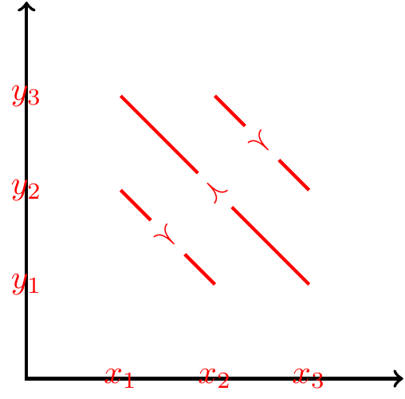
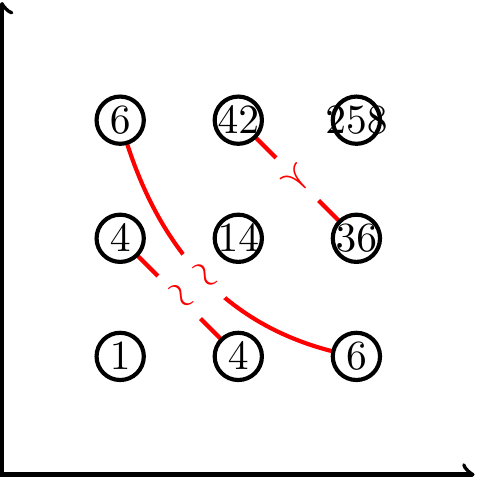
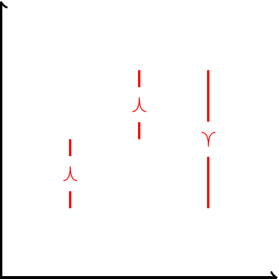
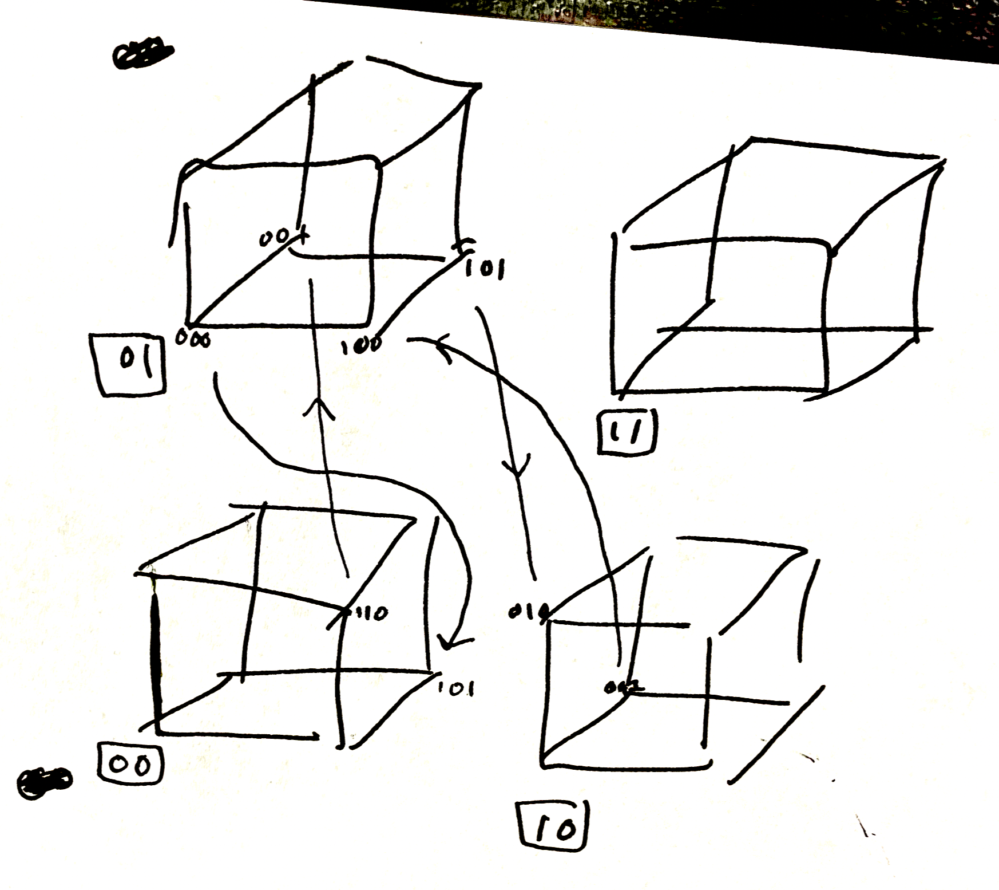

- Currently we assume separability.
- We allow utility to depend on the comparison, \(\delta\), and we assume the comparison affects each attribute in a separable way: \[u(x,\delta)=f\left( v(x) + \sum_i x_i u_i(\delta)\right).\tag{1}\]
- We want to justify this assumption.
- It’s not super-clear to the reader what role separability plays, & whether we could make a weaker assumption on \(u(x,\delta)\). However over the summer I concluded that any weaker assumptions would get weird behaviour.
- TODO: reconstruct reasoning why nonseparable model is unsatisfactory.
- .
- What are the testable implications of separability?
-
- There’s a ton of literature on separability in general.
- The most general condition is non-existence of a set of choices such that each attribute realization appears equally-often on LHS and RHS. Can think of this as cancelling rows in a Motzkin matrix.
- The independence assumption is much more intuitive, but it is only sufficient for binary attributes and \(n\leq 4\).
- Our condition is a bit more complicated than simple separability, it’s a type of pairwise separability. Graphical intuition: a set of choices on a cube will violate pairwise separability if projecting the choices onto each face gives a cycle on each face.
- There’s a ton of literature on separability in general.
- Simplest condition: square cycle.
-
In the \(n=2\) case we have: \[u(x_1,x_2,\delta)=v(x_1,x_2)+u_x(x_1,\delta)+u_y(x_2,\delta).\]
I believe the following inequalities will be inconsistent with this: \[\begin{aligned} u(x_1,y_1,\delta) &\succ u(x_2,y_1,\delta)\\ u(x_2,y_2,\delta) &\succ u(x_1,y_2,\delta)\\ u(x_1,y_2,\delta') &\succ u(x_1,y_1,\delta')\\ u(x_2,y_1,\delta') &\succ u(x_2,y_2,\delta'), \end{aligned} \]
proof: (unfinished) \[\begin{aligned} v(x_1,y_1) - v(x_2,y_1) + u_x(x_1,\delta)-u_x(x_2,\delta) &> 0\\ v(x_2,y_2) - v(x_1,y_2) + u_x(x_2,\delta)-u_x(x_1,\delta) &> 0\\ u(x_1,y_1,\delta') - u(x_1,y_2,\delta')&> 0\\ u(x_2,y_2,\delta') - u(x_2,y_1,\delta')&> 0, \end{aligned} \]
- There exists a nice intuition for the cancellation condition.
- The usual expression of the cancellation condition is fairly abstract: that there cannot exist a set of preferences in which each realization of each attribute appears equally often on left-hand-side and right-hand-side.
There are some superior ways of explaining this:
If the preferences are described in relative terms then they contain a cycle. E.g. suppose we observe these preferences: \[\binom{north}{west} \succ \binom{south}{west}, \binom{south}{west} \succ \binom{north}{east}, \binom{south}{east} \succ \binom{south}{west} \] We can write each in a relative style as follows: \[North \succ South,\ \ \ South+West \succ North+East, \ \ \ East \succ West \] Alternatively we can avoid the additions and write this as: \[v_{NS} > 0, \ \ \ v_{WE} > v_{NS}, \ \ \ v_{WE} < 0\]
We can also apply this to non-binary attributes, e.g. \[\binom{3 lemons}{2 oranges} > \binom{2 lemons}{3 oranges}\] Can be rewritten as: \[v(\text{3rd lemon}) > v(\text{3rd orange})\]
.
more notes
Summary.
| observations | granularity | attributes | sufficient for additivity |
|---|---|---|---|
| incomplete | - | - | cancellation |
| complete | continuous | \(n=2\) | hexagon / double cancellation (Wakker, 1989) |
| complete | continuous | \(n>2\) | independence |
| complete | binary | \(n\leq 4\) | independence (Bradley et al., 2005) |
| complete | multinomial | - | cancellation (Tversky, 1964) |
For two goods, additively separable if and only if \(\succeq\) satisfies double cancellation.1 \[\begin{aligned} (x1,y1) \succ (x2,y2) \\ (x2,y3) \succ (x3,y1) \\ \implies (x1,y3) \succ (x3,y2) \\ \end{aligned} \]
1 Pollison: “Debreu (1960) shows that with only two goods … preferences can be represented by an additively separable utility function if and only if a double cancellation condition holds.”
For n goods, additively separable if and only if \(\succeq\) satisfies preferential independence. From Wikipedia:
\[(x_1,x_2,\bm{x}_3)\succeq (x'_1,x'_2,\bm{x}_3) \iff (x_1,x_2,\bm{x}'_3)\succeq (x'_1,x'_2,\bm{x}'_3) \]
Q: how can it be that additively separable functions are unique only up to linear transforms? Oh it’s simple: any monotonic transform will still represent choice just as well, but that function won’t be additively separable. So among the subset of additively separable functions, they’re all linear transforms of each other.
Note: we care about additive separability, not separability. In our case separability and additive separability are equivalent: Bergstrom theorem 2 shows that if every commodity is separable then they’re all additively separable.
Q: topological vs algebraic approach? P. Wakker (1988) discusses this: topological essentially is using continuity and first-order conditions, and Debreu assumes continuity for his results. Algebraic is used by Krantz et al., while Wakker’s book uses topological.
What we want: a necessary and sufficient condition for a finite space.
- P. P. Wakker (1989) has a brief discussion on p33, states a cancellation condition as necessary and sufficient: “with every \(z_j \in \Gamma_j\) occurring equally often to the left of the preferences … as to the right of the preferences”
- He later mentions Dana Scott (1964) who derives something about sets of inequalities but hard to follow.
Conditions
Double cancellation / Thomsen

\[\begin{aligned} (x_1,y_2) \succ (x_2,y_1), (x_2,y_3) \succ (x_3,y_2) \implies (x_1,y_3) \succ (x_3,y_1) \end{aligned} \]
(P. Wakker 1988, p??) gives the Thomsen condition (for \(n=2\)) as: \[(x_1,y_2)\sim (x_2,y_1), (x_2,y_3)\sim (x_3,y_2) \implies (x_1,y_3)\sim (x_3,y_1)\]
This is essentially double cancellation but with indifferences.
Hexagon condition
P. P. Wakker (1989), this version from Karni and Safra (1998), for \(n=2\):
\[(x_1,y_2)\sim (x_2,y_1), (x_3,y_1)\sim (x_2,y_2)\sim (x_1,y_3) \implies (x_2,y_3)\sim (x_3,y_2) \]

Karni and Safra say “the hexagon condition is … logically weaker than the Thomsen condition and the triple cancelation condition.” However they also give a Lemma that under independence and restricted solvability (continuity) then the hexagon condition will hold if and only if the Thomsen condition holds holds.
Triple cancellation
From P. Wakker (1988), says it’s for \(n=2\): \[\begin{aligned} & (x_2,y_1)\succeq (x_1,y_2),\\ & (x_3,y_2)\succeq (x_4,y_1),\\ & (x_1,y_4)\succeq (x_2,y_3)\\ \implies & (x3,y4)\succeq (x4,y3) \end{aligned} \]
Seems to also be known as “Reidmeister” condition. This seems to have a similarity with the “double reversal” condition in the case of binary attributes.
mth-order cancellation
P. P. Wakker (1989) p34 says (…)
Independence
\[(x_1,y_1,\bm{z}_1)\succeq (x_2,y_2,\bm{z}_1) \iff (x_1,y_1,\bm{z}_2)\succeq (x_2,y_2,\bm{z}_2) \]
P. Wakker (1988) calls it “coordinate independence” and says “it is known by many names, such as (preferential) independence, additivity, strong (strict) separability, and the sure-thing principle.” Wakker writes it like this, which I think is basically equivalent:
\[(x_1,y_1)\succeq (x_2,y_1) \implies (x_1,y_2)\succeq (x_2,y_2)\]
Karni and Safra (1998) define independence if both of these hold:
\[\begin{aligned} (x_1,y_1)\succ (x_2,y_1) \implies (x_1,y_1)\succ (x_2,y_1) \\ (x_1,y_1)\succ (x_1,y_2) \implies (x_2,y_1)\succ (x_2,y_2) \\ \end{aligned}\]Note that monotonicity is sufficient for independence, but not necessary. If attributes are binary then monotonicity is both necessary and sufficient.

References
Scott (1964) “Measurement Structures and Inequalities”
Seems to be the first clear necessary & sufficient condition for additive separability. See Theorem 3.1 and 3.2, he seems to derive it from Kuhn-Tucker conditions. The condition seems to be basically a sequence and a permutation.
Gorman (1968) The structure of utility functions
Bradley et al. say “Gorman’s (1968) second theorem [is] that separable [independent] preferences are additive.”
Fishburn (1970) “Utility Theory for Decision Making”
- Chapter 4 “Additive Utilities with Finite Sets”. Derives cancellation condition from a Theorem of the Alternative, says it has been used for additive utility conditions by Tversky (1964), Scott (1964), and Adams (1965).
- Separability is not sufficient for additive utility. Surprising because separability is sufficient in continuous spaces (with continuity). I think counterexample is a function that’s nonseparable, but you choose a set of discrete points where it’s separable. Thus as Wakker says you need to check a lot of cancellation conditions to see if the data fits.
- Note: monotonicity is sufficient for separability.
- Counterexample: On p43: \(u(x1,x2)=x_1x_2+x_1^{y_1}\), with X1={1,2,3}, X2={1,3,5}. See image to the right.
- Thm 4.1: ≽ has a separable utility function iff there is no set of choices where RHS attributes are permutations of LHS attributes (he notes that Tversky calls this condition “cancellation”).
- Formally: if you have \(x^j\succ y^j\) for \(j=1,\ldots,m\) then it can’t be that the attribute-values of \(x^j\) are all permutations of the elements of \(y^j\).
Krantz et al. (1971) (KLST) (1971) “Foundations of Measurement” - People say it’s classic work.
P. Wakker (1988) The Algebraic versus the Topological Approach to Additive Representations
“This paper extends the additivity result from Krantz, Luce, Suppes & Tversky (1971) to additionally show that the representation is continuous. This is obviously not necesary for our purposes.
“[the result shows] the algebraic approach of KLST to additive conjoint measurement is preferable to the more customary topological approach [of Debreu].
P. P. Wakker (1989) Additive Representation of Preferences.
- Independence of equal subalternatives: (…)
- Coordinate independence: \[\forall i, [x_{-i}v_i\succeq y_{-i}v_i]\iff[x_{-i}w_i\succeq y_{-i}w_i]\]
- Weak separability: \[\forall i, [v_{-i}x_i\succeq v_{-i}y_i]\iff [w_{-i}x_i\succeq w_{-i}y_i]\]
- Separability with Finite Alternatives
- p33: when alternatives are finite then necessary & sufficient that there’s no set of inequalities such that LHS adds to RHS. “with every \(z_j\in\Gamma_j\) occurring equally often to the left of the preferences … as to the right of the preferences”
- He then talks about this matching condition for a fixed list of alternatives \(m\). Says that this is what KLST call “mth-order cancellation”. Relates this to transitivity and first-order cancellation (?).
“This result has been given in Scott(1964), Tversky(1964), KLST(Theorem 9.1), and Narens(1985, Theorems 5.2.1 and 5.2.2).. The latter two references also deal with noncomplete binary relations, compare Remark A3.4. Scott very clearly presents the general procedure to prove this, and many analogous, results.”
- p34: The advantage of continuouos/topological spaces is that conditions are easier to check “they call on no more than one or two special cases of the above ‘cancellation’ axiom”.
- Ch3: topological/continuous theorem. He describes hexagon condition.
- p49, Central Theorem: if \(\succeq\) is a continuous coordinate-independent weak order that satisfies the hexagon condition, then it can be represented with additive value functions.
Wakker (1991) “Additive Representations of Preferences, a New Foundation of Decision Analysis; The Algebraic Approach” - Says the paper adapts the 1989 model from topological to algebraic approach.
Blackorby, Primont, and Russell (1998) Separability: A Survey. - Mostly about demand I believe.
Karni and Safra (1998) “The Hexagon Condition and Additive Representation for Two Dimensions: An Algebraic Approach”
- They show that the hexagon condition is somewhat superior to Thomsen condition.
Bradley, Hodge, and Kilgour (2005) “Separable Discrete Preferences”
- They note that independence of \(\succ\) is not sufficient for separability of \(u(.)\) when the outcome space is discrete. Their counter-example is from Kraft (1959). Note that they use “separability” for our “independence,” and they use “additive” for our “separability.”
- Weirdly they don’t seem to cite any theorem about necessary & sufficient conditions for separability (i.e. KLST/Fishburn/Wakker).
- Nice result! independence is sufficient for separability with binary dimensions and n<=4. (however our \(\delta\) isn’t binary, if we’re going to consider that as a dimension)
- Nice: when attributes are binary then separability implies linearly separability. (proposition 5.3).
- Mirror property: If \(\succ\) is separable then \(x\succ y\) implies \(-y\succ -x\).
- Fishburn pair: This refers back to Fishburn (1970), they say condition C can be represented as a pair.
- They enumerate all possible preference relations over binary spaces with \(n=1,2,3,4\).
- They say at the end they think it’s only a coincidence that separability implies additivity for \(n<=4\) because there aren’t many cases. They say something like “they don’t expect a general proof.”
- The counter-example for n=5: from p343, see drawing at side. \[\begin{aligned} (0,1,1,0,1) &\succ (1,0,0,1,0)\\ (1,0,0,0,1) &\succ (0,1,1,0,0)\\ (0,0,1,1,0) &\succ (0,1,0,0,1)\\ (0,1,0,0,0) &\succ (0,0,1,0,1) \end{aligned} \] I think the following is equivalent but slightly easier to get intuition: \[\begin{aligned} (1,1,1,1,1) &\succ (0,0,0,0,0)\\ (0,0,0,1,1) &\succ (1,1,1,1,0)\\ (1,0,1,0,0) &\succ (1,1,0,1,1)\\ (1,1,0,1,0) &\succ (1,0,1,1,1) \end{aligned} \]

Polisson (2018)
He gives a test for additive separability of demand choice – he says that prior literature always assumed concavity of the elementary functions while he doesn’t assume concavity. He discusses demand but results seems applicable to any multiattribute choice.
Says that separability is computationally hard but additive separability is not computationally hard.
Regarding general separability (not additive): “It is well-known that preferences are separable on X if (x,y)≽(x’,y) for some y implies (x,y’)≽(x’,y’) for all y’ … It is also know that if ≽ has a utility representation, then preferences are separable on X if and only if there exists some functions v:X→R and f:RxY→R, where f is increasing in its first argument, such that u(x,y)=f(v(x),y). Assuming differentiability, notice that the marginal rates of substitution between any two commodities in X are independent of the choice from Y.”
I’m confused as to how his result differs from Krantz/Fishburn/Wakker. I don’t think they assume concavity. I think perhaps the key difference is that he wants to construct a continuous utility function?
Wikipedia, Ordinal Utility. Has good discussion of some separability results.
An additive ordinal utility function is unique up to increasing linear transformation.
Bergstrom Lecture Notes on Separable Preferences: Seems to be all in a continuous setup:
- Theorem 1: preferences are separable in \(i\): \[(x_i,x_{-i})\succeq(x_i',x_{-i})\implies (x_i,x'_{-i})\succeq(x_i',x'_{-i})\] if and only if you can write utility \(U(f(x_i),x_{-i})\).
- Theorem 2: additively separable if and only if every subset is separable. Doesn’t include proof but refers to Debreu (1960), Fishburn (1970), and Krantz et al. (1971).
- Theorem 3: with two commodities then utility is additive separability if and only if double cancellation holds.
Chambers and Echenique (2016) “Revealed Preference”
- Nothing directly applicable. I think they don’t have any direct theorem on separability of utility from multiattribute choice, only from demand (i.e. choice given prices).
Kreps (1988) “Notes on the Theory of Choice”
- Has nothing directly applicable
Definitions
- Partial order. If:
- reflexive (\(a\succeq a\))
- transitive (\(a\succeq b, b\succeq c \implies a\succeq c\))
- antisymmetric (\(a \succeq b \implies \neg (b\succeq a)\)).
Bibliography
Matrix Perspective
Matrix condition: . Given some \(A\) we know there exists \(x\) such that \(Ax>0\) if and only if there is no \(y>0\) such that \(yA=0\). So we can
Matrix condition and hexagon.
\[\begin{aligned} \bmatrix{a & b \\ \hline c & d \\} \end{aligned} \]
\[\left[\begin{array}{ccc|ccc} x_1 & x_2 & x_3 & y_1 & y_2 & y_3 \\ \hline . & . & . & . & . & . & \end{array}\right] \]